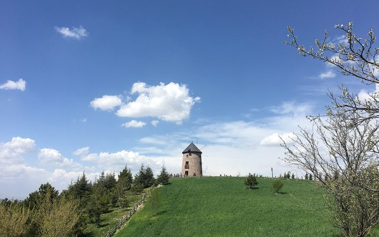
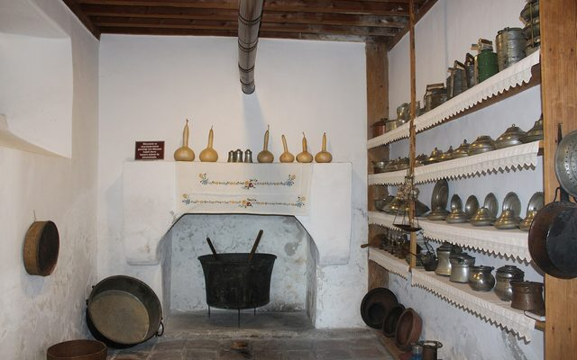
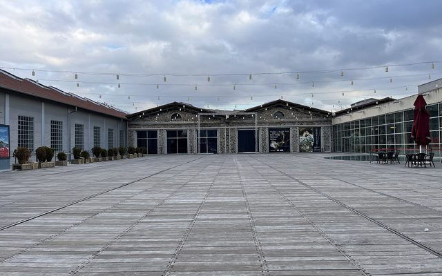
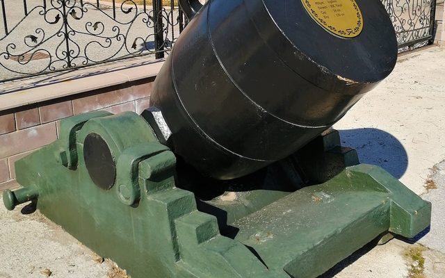

Kültür Varlıkları指南收录了安卡拉的36个地点：29 博物馆, 4 考古遗址, 2 城堡与历史建筑, 1 宗教建筑。下面是重点推荐、地图和完整列表。
⭐ 重点推荐

1 · 安卡拉 · 博物馆安纳托利亚文明博物馆
安纳托利亚文明博物馆位于安卡拉城堡脚下，馆舍是经修复的 15…

2 · 安卡拉 · 博物馆戈尔迪翁博物馆
戈尔迪翁博物馆位于波拉特勒附近的亚瑟霍裕克村，紧邻弗里吉亚王国都城戈尔迪翁——传说中迈达斯国王的城市，也是相传亚历山大大帝斩断“戈尔迪之结”的地方。平原上散布着数十座弗里吉亚贵族的墓冢；其中最大的一座对游客开放，内有世界上现存最古老的木结构之一。陶器、青铜器皿和别针展示了弗里吉亚人的精湛工艺。戈尔迪翁于 2023…

3 · 安卡拉 · 博物馆“7·15”民主博物馆
“7·15”民主博物馆是一座近代史博物馆，旨在记录 2016 年 7 月 15 日夜间的政变未遂及当晚发生的事件。照片、视频、文献、个人物品和证言逐小时呈现了那一夜的经过，并纪念遇难者。它被设计为一个纪念场所，让参观者通过第一手资料了解土耳其近代史上的这一事件。
🗺 地图
📍 全部地点 (36)
博物馆 (29)
安纳托利亚文明博物馆博物馆戈尔迪翁博物馆博物馆 · UNESCO“7·15”民主博物馆博物馆 阿拉格兹指挥部博物馆博物馆
阿拉格兹指挥部博物馆博物馆
阿尔滕柯伊露天博物馆博物馆 安纳托利亚活态村露天博物馆博物馆
安纳托利亚活态村露天博物馆博物馆 安卡拉玩具博物馆博物馆
安卡拉玩具博物馆博物馆 阿塔图尔克陵博物馆
阿塔图尔克陵博物馆 阿塔图尔克故居与铁路博物馆博物馆
阿塔图尔克故居与铁路博物馆博物馆
贝帕扎勒活态博物馆博物馆
切尔现代艺术中心博物馆 共和国博物馆博物馆
共和国博物馆博物馆 埃里姆坦考古与艺术博物馆博物馆
埃里姆坦考古与艺术博物馆博物馆 民族志博物馆博物馆
民族志博物馆博物馆 格克亚伊基金会国际象棋博物馆博物馆
格克亚伊基金会国际象棋博物馆博物馆 安卡拉空军博物馆博物馆
安卡拉空军博物馆博物馆 独立战争博物馆博物馆
独立战争博物馆博物馆
MKE工业与技术博物馆博物馆 中东技术大学科技博物馆博物馆
中东技术大学科技博物馆博物馆 绘画与雕塑博物馆博物馆
绘画与雕塑博物馆博物馆 土耳其国铁露天蒸汽机车博物馆博物馆
土耳其国铁露天蒸汽机车博物馆博物馆 马勒柯伊火车站博物馆博物馆
马勒柯伊火车站博物馆博物馆 土耳其航空协会博物馆博物馆
土耳其航空协会博物馆博物馆 乌卢詹拉尔监狱博物馆博物馆
乌卢詹拉尔监狱博物馆博物馆 钩子客栈拉赫米·科奇博物馆博物馆宪兵博物馆博物馆卡赫拉曼卡赞“7·15”烈士与民主博物馆博物馆穆罕默德·阿基夫·埃尔索伊文学博物馆图书馆博物馆MTA谢赫瓦尔自然历史博物馆博物馆
钩子客栈拉赫米·科奇博物馆博物馆宪兵博物馆博物馆卡赫拉曼卡赞“7·15”烈士与民主博物馆博物馆穆罕默德·阿基夫·埃尔索伊文学博物馆图书馆博物馆MTA谢赫瓦尔自然历史博物馆博物馆